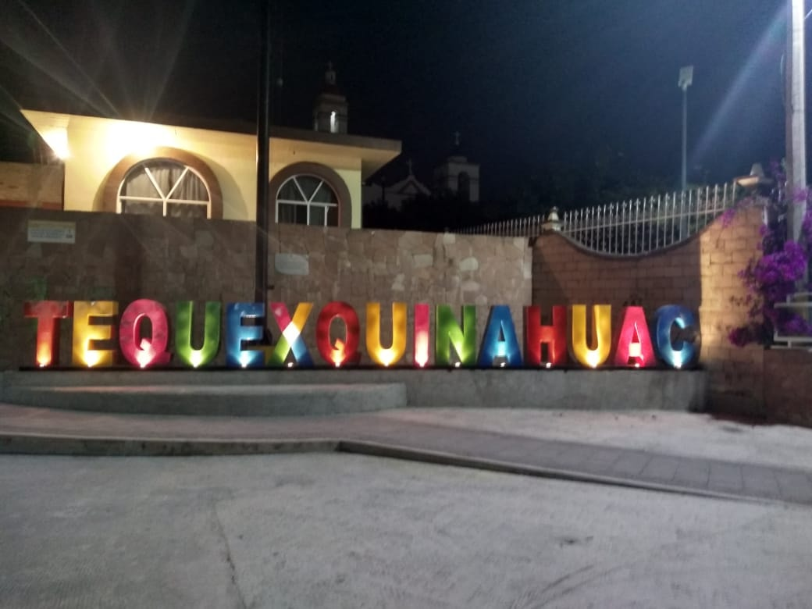

Tequexquinahuac
La colonia Tequexquinahuac es una localidad del municipio Texcoco, en Estado de México, y abarca un área cercana a 260 hectáreas.
Datos
- Tipo de Localidad: Puebo
- Localidad Tequexquinahuac
- Municipio Texcoco
- Estado Estado de México
- Código postal 56246
- Hectáreas 260

Facebook
Ejercicios
Ejercicio 2
Ejercicio 3